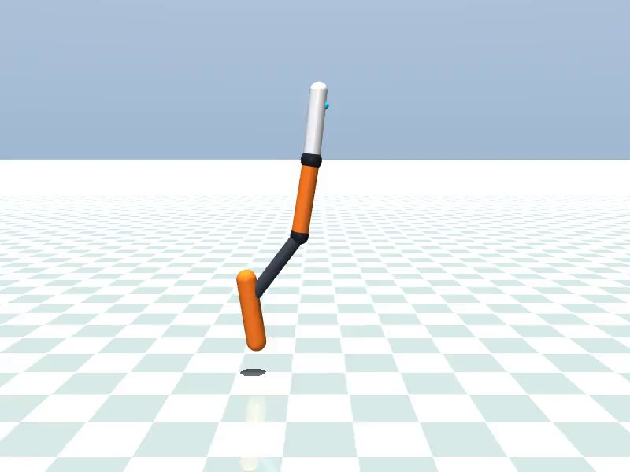
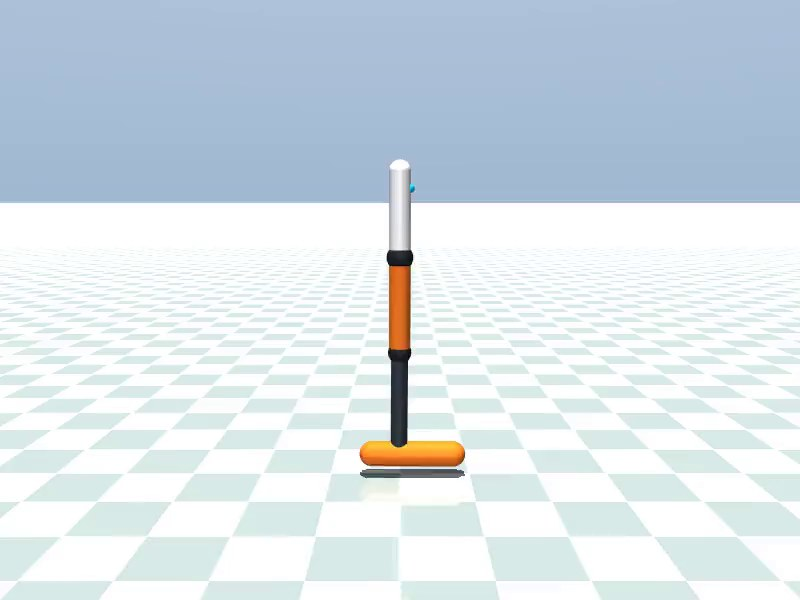

A one-legged robot learns to hop from recordings: a few expert, most weak.
No practice, no trial and error: the robot only studies 900k recorded moves (offline RL). We turn one dial, the expert share p, and train two learners at each setting.
Weak episodes are shorter (about 510 vs. 920 steps), so expert episodes are a smaller share of starts than of moves.
IQL weighs moves by value, so it should find the rare expert moves. BC copies everything.
Behavior cloning
Copies every recorded move equally.
Implicit Q-Learning
Copies moves with higher learned value more (β = 3, τ = 0.7, weights clipped at 100).
Same network, data and 300k steps: BC is IQL with β = 0, so any gap comes from the value weighting.
- H1BC's score rises with p.
- H2IQL reaches near-expert (90) at a much lower p than BC.
- H3A pickier IQL (higher τ) helps more at 5% than at 50%.
Fixed on 2026-11-21, before any grid result. A test passes only if all 5 seeds agree (P = 1/32 = 0.031); no correction across H1 to H3.
Adding expert data broke IQL. BC ignored it until the data was 100% expert.

BC · step 500HOPS ALL 1,000
IQL · step 0 step 14
step 14 step 27FALLS
step 27FALLSAt 5% and 20% expert, IQL is best at its first evaluation (57.4 and 68.4) and ends at 9.5 and 29.4. BC settles near 82 by 50k steps.
BC rarely falls. IQL locks onto the expert's first move, then can't follow the gait.
Imitation is hard to beat here
BC's deterministic action rarely falls; when it doesn't fall, it returns what the data does. So it scores 82 on 42.7-point data.
First-move lock-in
IQL copies the expert's first move (advantage about 10 vs. −0.8) but has only 49 episodes to learn the rest. Given BC's first move, it rises from about 0.4 to 71 to 83 (3 runs).
Weaker gait-following from 20% up
IQL's action error on expert moves is 11 to 17% higher than BC's, only 3.5% at 100%.
The bet failed: IQL never scored above BC. Next, fix IQL's policy step.
Limits
- One robot, one dataset pair; the weak data is strong (BC scores 82 on it).
- Standard IQL settings, 300k steps; 5 seeds per test.
Next
- Keep IQL's critic, change extraction (DDPG+BC, weight floor or clip); add filtered BC.
- A win = 5+ points over BC on every seed at 20% and 50%.